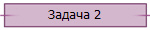

|
Любой из вас зимой бегал по снегу на лыжах.
Если снять лыжи и попробовать идти без них, ноги будут глубоко проваливаться
при каждом шаге, идти будет очень трудно.
Почему так происходит? Ведь вес мальчика без
лыж меньше, значит и сила, с которой он давит на снег, меньше. До сих пор мы
считали, что сила, действующая на тело, была приложена в одной точке. Но
заметьте: вес мальчика действует не на одну точку, а распределяется по
некоторой площади. В первом случае — по площади касания лыж, во втором —
подошв. Распределение силы по площади ее приложения характеризуют физической
величиной — давлением.
Давление -
величина, равная отношению силы, действующей перпендикулярно поверхности,
к площади этой поверхности.
 , ,
где p —
давление, F — приложенная сила, S — площадь опоры тела.
Давление — величина скалярная, у давления нет направления. Единица
измерения давления — 1 Паскаль (обозначается: 1Па). 1Па =
1Н/м2.
От чего зависит
давление тела на
поверхность? Почему заостренные предметы — иглы, зубы, клыки, когти, жала,
ножи очень хорошо колют и режут? Потому что результат действия силы на
поверхность зависит не только от ее величины, направления, точки приложения,
но и от площади опоры давящего тела.
 

Метки: давление, Паскаль |